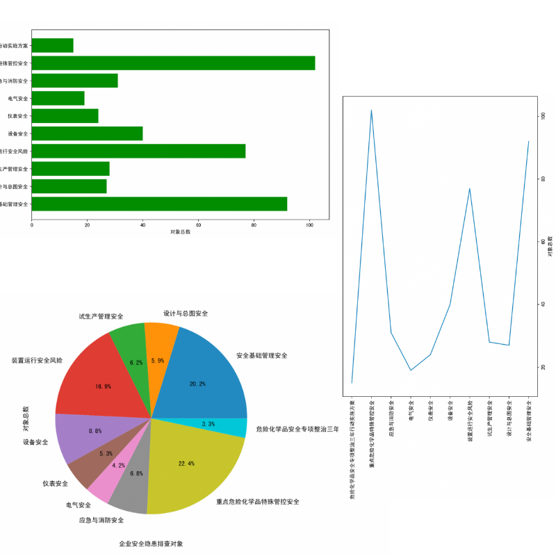
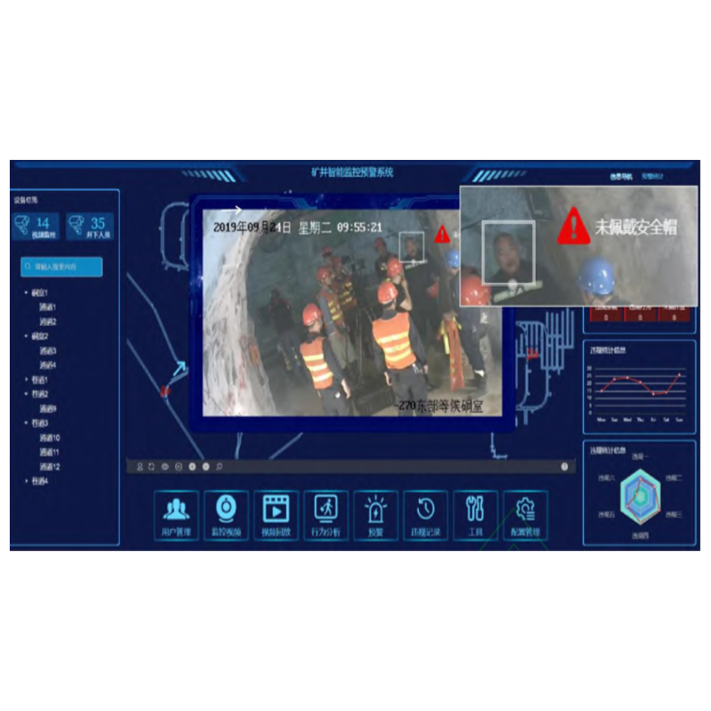

I'm interested in computer vision, machine learning, and image processing. Much of my research is about implementing computer vision in different engineering scenarios. My representative projects are highlighted.
Studied the shortcomings of using orthogonalization to solve the entanglement between feature vectors, analyzed the reasons that may lead to the entanglement of facial feature vectors, and proposed preliminary measures to solve the entanglement issue of using TL-GAN to generate human face images.
The project stitched the images taken into a 360° Panorama, using Harris Corners Detector to extract feature key points (POI), then used OpenCV to form the panorama.

Database Design and the An alysis of Hazardous Chemicals Statistics Shiwei HE, Leo Hu, Pakho Lee (*course project)
Report /
DataVisualization
Our team collceted data about 10 most common kinds of accident from NRCC, forming a relatively complete database, and visualize the data and analyze the development trend of accidents caused by the hazardous chemicals.

Unsafe Behavior Recognition in Coal Mining Environment Shiwei HE Presentation (p.25-p.37)
Graduation Design - Theme 2 (oral)
The trained model successfully detect whether workers in workspace wearing a hard hart, and capable of recognizing 3 most common unsafe behaviors in workspace (such smoking, using phone, falling down.)
Wechat App Building: Dormitory Entry Permission Granting Applet Shiwei HE Code (*gig for fun)
The app ran smoothly on the platform of Wechat, helping the dormitory manager to gain feedback on students' entry into the building during the pandemic. The proejct includes web design like JavaScript and CSS, deploying the server and configure the domain name of the CentOS system image and network to connect with the databases.
Recent research on the Generated Adversarial Network models has made great progress in the task of generating images on human demand. Among them, Transparent Latentspace GAN tries to solve the problem by analyzing the latent space and finding the feature axes inside it. This model views the problem from a novel perspective, and it is easy to be carried out. However, more thorough and detailed experiments have shown that the original method on axes disentanglement of the model has certain drawbacks, which may lead to ethical problems, meaning that the model may pick up some pre-existing prejudice of racial or gender discrimination. This paper puts forward a new training mode aiming at reducing the bias existing in the generated images and simultaneously managing the disentanglement. Also, a more thorough examination of the model was conducted and it is found that the architecture of the model may be generalized to some universal functions. Among them, the quality evaluation of the feature extractor is the most practical and useful one. This finding, in turn, may be helpful for distinguishing a more accurate, effective, and robust feature extractor, thus improving the performance of the TL-GAN model in the first place.
Experience 💻
Software Engineer (Hardware oriented)
@ Zillnk Technology
Intern,
I was in charge of coding for the log management system of Remote Radio Unit, writing functions to capture physical parameters, and program preset terminal commands for customers like "get hardware description." At the end of the Hertz+ Project, my code is unpdated on 1000 RRUs.
Full-Stack Developer @ GeoVIS
Intern,
As the leader of 5 interns, I was in charge of programming to fetch data from target data source, and analyze them. Supporting the import option more than 10 common relational databases (MySQL, Oracle DB, etc.), our team turned clients' business stats into interactive graphs.
{kind=link}